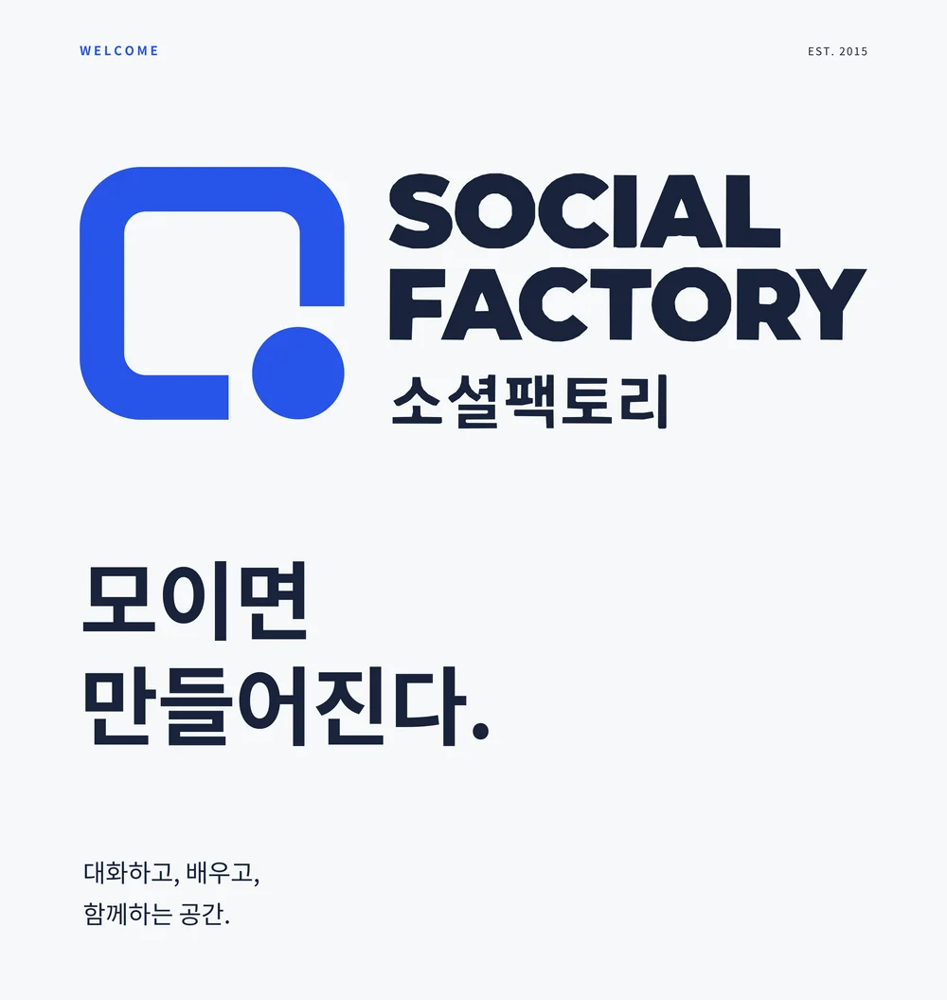

모이면 만들어진다
소셜팩토리는 2015년 홍대에서 시작한 모임공간입니다. 스터디와 강연, 클래스와 작은 행사를 운영하며 사람들이 함께 시간을 보낼 자리를 만들어 왔습니다. 건대에서는 모임을 위한 다섯 개의 룸과 코워킹, 독립사무실을 안내합니다.
모임을 준비하는 일이
조금 덜 번거롭도록
소셜팩토리는 사람들이 모여 이야기하고 배우는 자리를 만듭니다. 어떤 방이 맞는지, 필요한 장비를 사용할 수 있는지, 처음 오는 사람이 어떻게 찾아오는지. 공간을 고를 때 궁금한 내용을 미리 안내하겠습니다. 이용 조건과 예약 안내는 같은 기준으로 관리합니다.
- 모임 인원에 맞는 방과 배치, 이용 방법을 쉽게 확인할 수 있도록 안내합니다.
- 예약과 입실 방법, 이용 중 연락처를 미리 안내합니다.
- 공간 이름과 안내를 예약 페이지, 층 안내도, 룸 사인에 똑같이 써서 헤매지 않게 합니다.
- 확인한 사실은 분명히 적고, 상담이 필요한 조건은 상담이 필요하다고 적습니다.

로고 이야기
두 개의 심볼을 함께 씁니다. 열린 사각형과 점은 공간과 사람을, 네 개의 원은 모여 앉은 사람들과 네 가지 시간(TALK · PLAY · BOOK · STUDY)을 뜻합니다.
FACTORY소셜팩토리
열린 사각형은 공간, 점은 사람입니다. 한쪽이 열려 있는 공간은 사람이 들어와야 비로소 완성됩니다. 간판, 소개서 표지, 홈페이지처럼 브랜드를 대표하는 자리에 씁니다.
FACTORY소셜팩토리
네 개의 원은 TALK, PLAY, BOOK, STUDY 네 가지 시간이자, 테이블에 모여 앉은 사람들입니다. 룸 사인, 프로필, 스티커처럼 작은 자리에 씁니다.
컬러
흰 바탕에 네이비 글씨를 기본으로 하고, 소셜 블루 하나를 포인트로 씁니다. 블루는 버튼, 문, 사인처럼 시선이 머물 자리에만 둡니다.
서체와 말투
한글은 프리텐다드, 영문은 몬트세라트를 씁니다. 글은 친절하지만 과장하지 않는 합니다체로 쓰고, 넓다거나 편하다는 평가보다 인원·배치·장비·비용 같은 조건으로 공간을 설명합니다.
| 이렇게 씁니다 | 이렇게 쓰지 않습니다 |
|---|---|
| 3번룸은 12~18명 안내 기준이며, 책상을 놓은 인원은 배치 사진에서 확인할 수 있습니다. | 최고급 프리미엄 대형 강연장 |
| 예약이 확정되면 출입 방법을 보내 드립니다. | 언제든 편하게 오세요~ |

홍대에서 시작한 모임공간,
건대에서 이어갑니다
2015년 10월 홍대 놀이터 옆 지하 공간에서 문을 열었고, 연남·신촌·합정·인천으로 넓어졌다가 2020~2021년에 모두 운영을 종료했습니다. 아래 수치는 당시 공간소개서와 지원서의 자체 집계 기준이며, 과거 기록입니다.
- 2015.10
- 홍대 1호점 오픈 — 서교동, 약 40평
- 2016.12
- 공간비즈니스 우수사례 선정 — 월 방문자 4,500명
- 2017.12
- 월 방문자 13,000명 — 홍대 한 건물 세 개 층 운영
- 2018.05
- 모임공간 6개 지점 운영 — 홍대·연남·인천, 합계 약 285평
- 2019
- 운영 경험을 무인 파티룸 브랜드로 확장
- 2026
- 소셜팩토리 건대 준비 — 화양동 10-1 한아름건물 4층
소셜팩토리를 시작한 최시준입니다
2015년 홍대에서 소셜팩토리를 열고 공간을 기획하고 운영해 왔습니다. 사람이 모이는 방식과 공간을 이용하는 과정을 함께 살피며 건대의 소셜팩토리를 만들고 있습니다.
중앙대학교 경영학과를 졸업하고 현대엔지니어링 자산관리팀에서 일하다 공간 사업을 시작했습니다. 10년 넘게 340곳 이상의 공간을 기획·운영했고(2015~2026 자체 집계), 소셜팩토리에서 쌓은 운영 경험은 무인 파티룸 브랜드 쏘플파티룸으로 이어졌습니다.
건대에서 다시 여는 이유
홍대에서 꾸준했던 스터디, 동아리, 강연, 기업 워크숍 수요는 대학가인 건대에서도 기대할 수 있습니다. 이번에는 상주 인력과 카페 대신 무인·예약제로 운영하면서, 예약과 입실 방법, 이용 중 연락처를 미리 안내하는 데 힘을 쏟습니다.
- 온라인 계정과 멤버십은 지점명 없이 '소셜팩토리'로 운영해 다음 지점에서도 그대로 이어 갑니다.
- 소셜아카데미와 소셜패밀리는 일정과 운영자가 확정된 뒤 안내합니다.